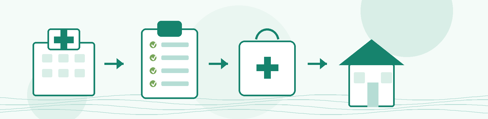

医生评估可出院 → 护士站确认 → 办理结算+领取离院带药 → 领取出院记录+诊断书 → 遵医嘱复诊与康复
主管医生评估病情，确认符合出院条件。
17楼B区护士站通知出院事项，核对患者信息。
了解离院带药、康复训练、注意事项。
按通知到住院结算处办理出院结算，按离院带药清单领取药物。请妥善保管住院证。
清点个人物品，确认无静脉留置针、腕带等遗漏。
遵医嘱定期复诊，必要时提前预约金普疼痛科门诊。
详细了解本次住院的最终诊断、治疗经过、手术/操作记录以及出院后医嘱。
逐一确认带回家药物的药名、用法、用量、疗程以及特殊的储存、服用注意事项。
住院费用清单、发票、医保结算单等，请妥善保管。
住院期间所做的各项影像学和血液检查报告，如需复诊或转诊请妥善留存。
明确复诊时间、科室、医生和预约方式。
明确每天练什么、练习几次、哪些动作不能做。
必须严格按出院医嘱规律服药，严禁自行加量、减量、停药，更不能盲目叠加服用其他同类型的止痛药。在使用镇痛药、抗神经痛药物期间，如出现明显的头晕、嗜睡、恶心、便秘、皮疹等不适，请及时告知医护人员评估。
在接受神经阻滞、软组织内封闭、脉冲射频等局部微创治疗后，穿刺点皮肤应保持清洁与干燥。如无医生特殊医嘱，治疗后48小时内穿刺部位尽量避免沾水，同时切勿用手揉搓或自行给予局部热敷。
请谨记“疼痛暂时缓解不代表可以立即过度活动”。特别是肩颈腰腿痛的患者，出院后应当在医生或康复治疗师的指导下，进行循序渐进的恢复性训练，避免忍痛硬练、突然增加身体负重以及剧烈的局部牵拉。
保持规律的作息时间，日常注意保暖，避免受凉和过度劳累。根据自身身体情况保证适量饮水、适当增加膳食纤维的摄入以预防便秘。合并有糖尿病、高血压等基础疾病的患者，请继续严格做好原发病的常规管理。
身体出现以下异常时，请不要采取“忍一忍”的态度等待其自行好转：